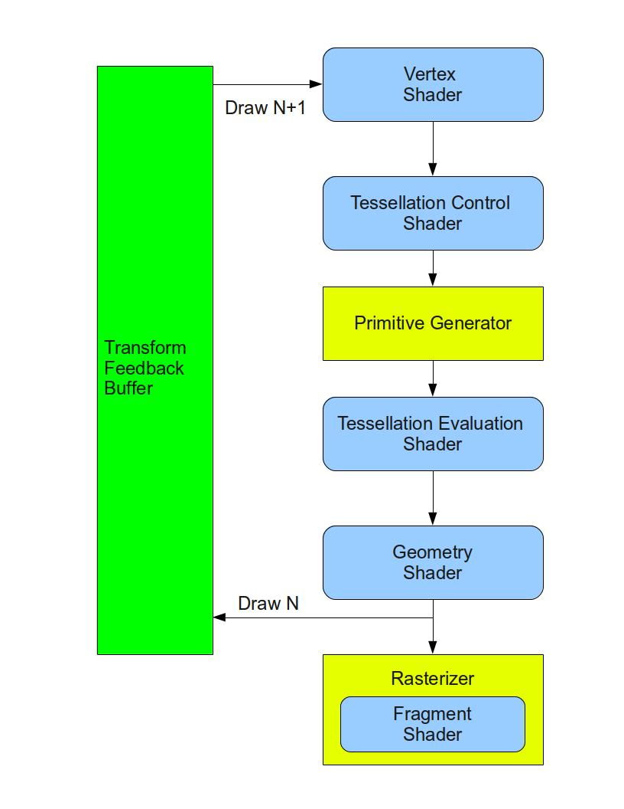
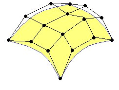
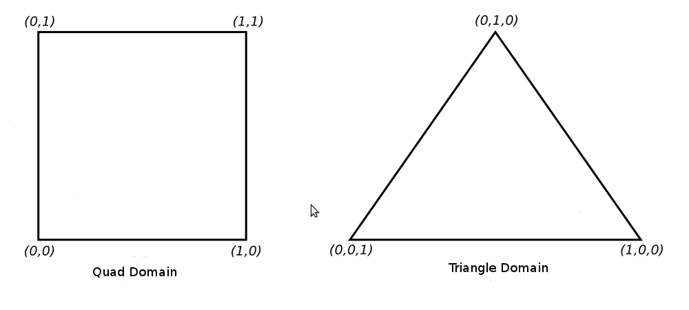
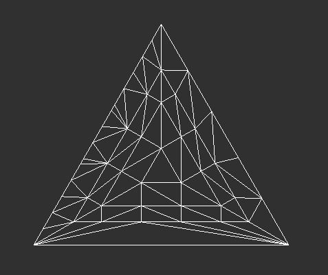
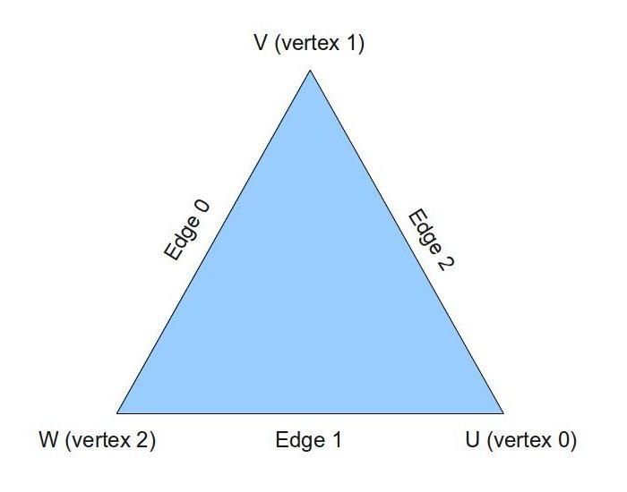

Background
Tessellation is an exciting new feature in OpenGL 4.x. The core problem that Tessellation deals with is the static nature of 3D models in terms of their detail and polygon count. The thing is that when we look at a complex model such as a human face up close we prefer to use a highly detailed model that will bring out the tiny details (e.g. skin bumps, etc). A highly detailed model automatically translates to more triangles and more compute power required for processing. When we render the same model at a greater distance we prefer to use a lower detailed model and allow more compute resources to the objects that are closer to the camera. This is simply a matter of balancing GPU resources and diverting more resources to the area near the camera where small details are more noticeable.
One possible way to solve this problem using the existing features of OpenGL is to generate the same model at multiple levels of detail (LOD). For example, highly detailed, average and low. We can then select the version to use based on the distance from the camera. This, however, will require more artist resources and often will not be flexible enough. What we need is a way to start with a low polygon model and subdivide each triangle on the fly into smaller triangles. This, in a nutshell, is Tessellation. Being able to do all this dynamically on the GPU and also select the level of detail per triangle is part of what the Tessellation pipeline in OpenGL 4.x provides.
Tessellation has been defined and integrated into the OpenGL spec after several years of research both in the academia as well as the industry. Its design was heavily influenced by the mathematical background of geometric surfaces and curves, Bezier patches and subdivision. We will engage Tessellation in two steps. In this tutorial we will focus on the new mechanics of the pipeline in order to get Tessellation up and running without too much mathematical hassle. The technique itself will be simple but it will expose all the relevant components. In the next tutorial we will study Bezier patches and see how to apply them to a Tessellation technique.
Let's take a look at how Tessellation has been implemented in the graphics pipeline. The core components that are responsible for Tessellation are two new shader stages and in between them a fixed function stage that can be configured to some degree but does not run a shader. The first shader stage is called Tessellation Control Shader (TCS), the fixed function stage is called the Primitive Generator (PG), and the second shader stage is called Tessellation Evaluation Shader (TES). Here's a diagram showing the location of the new stages in the pipeline:
The TCS works on a group of vertices called Control Points (CP). The CPs don't have a well defined polygonal form such as a triangle, square, pentagon or whatever. Instead, they define a geometric surface. This surface is usually defined by some polynomial formula and the idea is that moving a CP has an effect on the entire surface. You are probably familiar with some graphic software that allows you to define surfaces or curves using a set of CPs and shape them by moving the CPs. The group of CPs is usually called a Patch. The yellow surface in the following picture is defined by a patch with 16 CPs:
The TCS takes an input patch and emits an output patch. The developer has the option in the shader to do some transformation on the CPs or even add/delete CPs. In addition to the output patch the control shader calculates a set of numbers called Tessellation Levels (TL). The TLs determine the Tessellation level of detail - how many triangles to generate for the patch. Since all this happens in a shader the developer has the freedom to use any algorithm in order to calculate the TLs. For example, we can decide that the TLs will be 3 if the rasterized triangle is going to cover less than a 100 pixels, 7 in case of 101 to 500 pixels and 12.5 for everything above that (we will later see how the value of the TL translates into coarser or finer Tesssellation). Another algoritm can be based on a distance from the camera. The nice thing about all of this is that each patch can get different TLs according to its own characteristics.
After the TCS finishes comes the fixed function PG whose job is to do the actual subdivision. This is probably the most confusing point for newcomers. The thing is that the PG doesn't really subdivides the output patch of the TCS. In fact, it doesn't even have access to it. Instead, it takes the TLs and subdivides what is called a Domain. The domain can either be a normalized (in the range of 0.0-1.0) square of 2D coordinates or an equilateral triangle defined by 3D barycentric coordinates:
Barycentric coordinates of a triangle is a method of defining a location inside a triangle as a combination of the weight of the three vertices. The vertices of the triangle as designated as U, V and W and as the location gets closer to one vertex its weight increases while the weight of the other vertices decreases. If the location is exactly on a vertex the weight of that vertex is 1 while the other two are zero. For example, the barycentric coordinate of U is (1,0,0), V is (0,1,0) and W is (0,0,1). The center of the triangle is on the barycentric coordinate of (1/3,1/3,1/3). The interesting property of barycentric coordinates is that if we sum up the individual components of the barycentric coordinate of each and every point inside the triange we always get 1. For simplicity let's focus on the triangle domain from now on.
The PG takes the TLs and based on their values generates a set of points inside the triangle. Each point is defined by its own barycentric coordinate. The developer can configure the output topology to be either points or triangles. If points are chosen then the PG simply sends them down the pipeline to be rasterized as points. If triangles are chosen the PG connects all the points together so that the entire face of the triangle is tessellated with smaller triangles:
In general, the TLs tell the PG the number of segments on the outer edge of the triangle and the number rings towards the center
So how do the small triangles in the above picture relate to the patch that we saw earlier? Well, it depends on what you want to do with Tessellation. One very simple option (and the one that we will use in this tutorial) is to skip the whole notion of curved geometric surfaces with their polynomial representation and simply say that the triangles from your model are simply mapped to patches. In that case the 3 triangle vertices become our 3 CPs and the original triangle is both the input and output patch of the TCS. We use the PG to tessellate the triangle domain and generate small "generic" triangles represented by barycentric coordinates and use a linear combination of these coordinates (i.e. multiply them by the attributes of the original triangle) in order to tessellate the triangles of the original model. In the next tutorial we will see an actual use of the patch as a representative of a geometric surface. At any rate, remember that the PG ignores both the input and output patch of the TCS. All it cares about are the per patch TLs.
So after the PG has finished subdividing the triangle domain we still need someone to take the results of this subdivision and do something with it. After all, the PG doesn't even have access to the patch. Its only output are barycentric coordinates and their connectivity. Enter the TES. This shader stage has access both to the output patch of the TCS and the barycentric coordinates that the PG generated. The PG executes the TES on every barycentric coordinate and the job of the TES is to generate a vertex for that point. Since the TES has access to the patch it can take stuff from it such as position, normal, etc and use them to generate the vertex. After the PG executes the TES on the three barycentric coordinates of a "small" triangle it takes the three vertices the TES generated and sends them down as a complete triangle for rasterization.
The TES is similar to the VS in the sense that it always has a single input (the barycentric coordinate) and a single output (the vertex). The TES cannot generate more than one vertex per invocation nor can it decide to drop the vertex. The main purpose of the TES that the architects of Tessellation in OpenGL envisioned is to evaluate the surface equation at the given domain location. In simpler terms this means placing the barycentric coordinate in the polynomial that represents the surface and calculate the result. The result is the position of the new vertex which can then be transformed and projected as usual. As you can see, when dealing with geometric surfaces the higher we choose our TLs, the more domain locations we get and by evaluating them in the TES we get more vertices that better represent the true mathematical surface. In this tutorial the evaluation of the surface equation will simply be a linear combination.
After the TES has processed the domain locations the PG takes the new vertices and sends them as triangles to the next stages of the pipeline. After the TES comes either the GS or the rasterizer and from here on everything runs as usual.
Let's summarize the entire pipeline:
- The VS is executed on every vertex in a patch. The patch comprises several CPs from the vertex buffer (up to a limit defined by the driver and GPU).
- The TCS takes the vertices that have been processed by the VS and generates an output patch. In addition, it generates TLs.
- Based on the configured domain, the TLs it got from the TCS and the configured output topology, the PG generates domain location and their connectivity.
- The TES is executed on all generated domain locations.
- The primitives that were generated in step 3 continue down the pipe. The output from the TES is their data.
- Processing continues either at the GS or at the rasterizer.
Source walkthru
(tutorial30.cpp:80)
GLint MaxPatchVertices = 0;
glGetIntegerv(GL_MAX_PATCH_VERTICES, &MaxPatchVertices);
printf("Max supported patch vertices %d\n", MaxPatchVertices);
glPatchParameteri(GL_PATCH_VERTICES, 3);
When Tessellation is enabled (i.e. when we have either a TCS or a TES) the pipeline needs to know how many vertices comprise each input patch. Remember that a patch does not necessarily have a defined geometric form. It is simply a list of control points. The call to glPatchParameteri() in the code excerpt above tells the pipeline that the size of the input patch is going to be 3. That number can be up to what the driver defines as GL_MAX_PATCH_VERTICES. This value can be different from one GPU/driver to another so we fetch it using glGetIntegerv() and print it.
(lighting.vs)
#version 410 core
layout (location = 0) in vec3 Position_VS_in;
layout (location = 1) in vec2 TexCoord_VS_in;
layout (location = 2) in vec3 Normal_VS_in;
uniform mat4 gWorld;
out vec3 WorldPos_CS_in;
out vec2 TexCoord_CS_in;
out vec3 Normal_CS_in;
void main()
{
WorldPos_CS_in = (gWorld * vec4(Position_VS_in, 1.0)).xyz;
TexCoord_CS_in = TexCoord_VS_in;
Normal_CS_in = (gWorld * vec4(Normal_VS_in, 0.0)).xyz;
}
This is our VS and the only difference between it and the previous ones is that we are no longer transforming the local space coordinates to clip space (by multiplying by the world-view-projection matrix). The reason is that there is simply no point in that. We expect to generate a lot of new vertices that will need that transformation anyway. Therefore, this action is postponed until we get to the TES.
(lighting.cs)
#version 410 core
// define the number of CPs in the output patch
layout (vertices = 3) out;
uniform vec3 gEyeWorldPos;
// attributes of the input CPs
in vec3 WorldPos_CS_in[];
in vec2 TexCoord_CS_in[];
in vec3 Normal_CS_in[];
// attributes of the output CPs
out vec3 WorldPos_ES_in[];
out vec2 TexCoord_ES_in[];
out vec3 Normal_ES_in[];
This is the start of the TCS. It is executed once per CP in the output patch and we start by defining the number of CPs in the output patch. Next we define a uniform variable that we will need in order to calculate the TLs. After that we have a few input and output CP attributes. In this tutorial we have the same structure for both the input and output patch but it doesn't always have to be this way. Each input and output CP has a world position, texture coordinate and normal. Since we can have more than one CP in the input and output patches each attribute is defined using the array modifier []. This allows us to freely index into any CP.
(lighting.cs:33)
void main()
{
// Set the control points of the output patch
TexCoord_ES_in[gl_InvocationID] = TexCoord_CS_in[gl_InvocationID];
Normal_ES_in[gl_InvocationID] = Normal_CS_in[gl_InvocationID];
WorldPos_ES_in[gl_InvocationID] = WorldPos_CS_in[gl_InvocationID];
We start the main function of the TCS by copying the input CP into the output CP. This function is executed once per output CP and the builtin variable gl_InvocationID contains the index of the current invocation. The order of execution is undefined because the GPU probably distributes the CPs across several of its cores and runs them in parallel. We use gl_InvocationID as an index into both the input and output patch.
(lighting.cs:40)
// Calculate the distance from the camera to the three control points
float EyeToVertexDistance0 = distance(gEyeWorldPos, WorldPos_ES_in[0]);
float EyeToVertexDistance1 = distance(gEyeWorldPos, WorldPos_ES_in[1]);
float EyeToVertexDistance2 = distance(gEyeWorldPos, WorldPos_ES_in[2]);
// Calculate the tessellation levels
gl_TessLevelOuter[0] = GetTessLevel(EyeToVertexDistance1, EyeToVertexDistance2);
gl_TessLevelOuter[1] = GetTessLevel(EyeToVertexDistance2, EyeToVertexDistance0);
gl_TessLevelOuter[2] = GetTessLevel(EyeToVertexDistance0, EyeToVertexDistance1);
gl_TessLevelInner[0] = gl_TessLevelOuter[2];
}
After generating the output patch we calculate the TLs. The TLs can be set differently for each output patch. OpenGL provides two builtin arrays of floating points for the TLs: gl_TessLevelOuter (size 4) and gl_TessLevelInner (size 2). In the case of a triangle domain we can use only the first 3 members of gl_TessLevelOuter and the first member from gl_TessLevelInner (in addition to the triangle domain there are also the quad and isoline domain that provide different access to arrays). gl_TessLevelOuter[] roughly determines the number of segments on each edge and gl_TessLevelInner[0] roughly determines how many rings the triangle will contain. If we designate the triangle vertices as U, V and W then the corresponding edge for each vertex is the one which is opposite to it:
The algorithm we use to calculate the TLs is very simple and is based on the distance in world space between the camera and the vertices. It is implemented in the function GetTessLevel (see below). We calculate the distance between the camera and each vertex and call GetTessLevel() three times to update each member in gl_TessLevelOuter[]. Each entry is mapped to an edge according to the picture above (TL of edge 0 goes to gl_TessLevelOuter[0], etc) and the TL for that edge is calculated based on the distance from the camera to the two vertices that create it. The inner TL is selected the same as the TL of edge W.
You can use any algorithm that you want to calculate the TLs. For example, one algorithm estimates the size of the final triangle on the screen in pixels and sets the TLs such that no tessellated triangle becomes smaller than a given number of pixels.
(lighting.cs:18)
float GetTessLevel(float Distance0, float Distance1)
{
float AvgDistance = (Distance0 + Distance1) / 2.0;
if (AvgDistance <= 2.0) {
return 10.0;
}
else if (AvgDistance <= 5.0) {
return 7.0;
}
else {
return 3.0;
}
}
This function calculates the TL for an edge based on the distance from the camera to the two vertices of the edge. We take the average distance and set the TL to 10 or 7 or 3. As the distance grows we prefer a smaller TL so as not to waste GPU cycles.
(lighting.es)
#version 410 core
layout(triangles, equal_spacing, ccw) in;
This is the start of the TES. The 'layout' keyword defines three configuration items:
- triangles this is the domain the PG will work on. The other two options are quads and isolines.
- equal_spacing means that the triangle edges will be subdivided into segments with equal lengths (according to the TLs). You can also use fractional_even_spacing or fractional_odd_spacing that provide a smoother transition between the lengths of the segments whenever the TL crosses an even or odd integer. For example, if you use fractional_odd_spacing and the TL is 5.1 it means there will be 2 very short segments and 5 longer segments. As the TL grows towards 7 all the segments become closer in length. When the TL hits 7 two new very short segments are created. fractional_even_spacing is the same with even integer TLs.
- ccw means that the PG will emit triangles in counter-clockwise order (you can also use cw for clockwise order). You may be wondering why we are doing that while our front facing triangles in clockwise order. The reason is that the model I supplied with this tutorial (quad2.obj) was generated by Blender in counter clockwise order. I could also have specified the Assimp flag 'aiProcess_FlipWindingOrder' when loading the model and use 'cw' here. I simply didn't want to change 'mesh.cpp' at this point. The bottom line is that whatever you do, make sure you are consistent.
Note that you can also specify each configuration item with its own layout keyword. The scheme above simply saves some space.
(lighting.es:5)
uniform mat4 gVP;
uniform sampler2D gDisplacementMap;
uniform float gDispFactor;
in vec3 WorldPos_ES_in[];
in vec2 TexCoord_ES_in[];
in vec3 Normal_ES_in[];
out vec3 WorldPos_FS_in;
out vec2 TexCoord_FS_in;
out vec3 Normal_FS_in;
The TES can have uniform variables just like any other shader. The displacement map is basically a height map which means that every texel represents the height at this location. We will use it to generate bumps on the surface of our mesh. In addition, the TES can also access the entire TCS output patch. Finally, we declare the attributes of our output vertex. Note that the array modifier is not present here because the TES always outputs a single vertex.
(lighting.es:27)
void main()
{
// Interpolate the attributes of the output vertex using the barycentric coordinates
TexCoord_FS_in = interpolate2D(TexCoord_ES_in[0], TexCoord_ES_in[1], TexCoord_ES_in[2]);
Normal_FS_in = interpolate3D(Normal_ES_in[0], Normal_ES_in[1], Normal_ES_in[2]);
Normal_FS_in = normalize(Normal_FS_in);
WorldPos_FS_in = interpolate3D(WorldPos_ES_in[0], WorldPos_ES_in[1], WorldPos_ES_in[2]);
This is the main function of the TES. Let's recap what we have when we get here. The mesh vertices were processed by the VS and the world space position and normal were calculated. The TCS got each triangle as a patch with 3 CPs and simply passed it through to the TES. The PG subdivided an equilateral triangle into smaller triangles and executed the TES for every generated vertex. In each TES invocation we can access the barycentric coordinates (a.k.a Tessellation Coordinates) of the vertex in the 3D-vector gl_TessCoord. Since the barycentric coordinates within a triangle represent a weight combination of the 3 vertices we can use it to interpolate all the attributes of the new vertex. The functions interpolate2D() and interpolate3D() (see below) do just that. They take an attribute from the CPs of the patch and interpolate it using gl_TessCoord.
(lighting.es:35)
// Displace the vertex along the normal
float Displacement = texture(gDisplacementMap, TexCoord_FS_in.xy).x;
WorldPos_FS_in += Normal_FS_in * Displacement * gDispFactor;
gl_Position = gVP * vec4(WorldPos_FS_in, 1.0);
}
Having each triangle of the original mesh subdivided into many smaller triangles doesn't really contribute much to the general appearance of the mesh because the smaller triangles are all on the same plane of the original triangle. We would like to offset (or displace) each vertex in a way that will match the contents of our color texture. For example, if the texture contains the image of bricks or rocks we would like our vertices to move along the edges of the bricks or rocks. To do that we need to complement the color texture with a displacement map. There are various tools and editors that generate a displacement map and we are not going to go into the specifics here. You can find more information on the web. To use the displacement map we simply need to sample from it using the current texture coordinate and this will give us the height of this vertex. We then displace the vertex in world space by multiplying the vertex normal by the height and by a displacement factor uniform variable that can be controlled by the application. So every vertex is displaced along its normal based on its height. Finally, we multiply the new world space position by the view-projection matrix and set it into 'gl_Position'.
(lighting.es:17)
vec2 interpolate2D(vec2 v0, vec2 v1, vec2 v2)
{
return vec2(gl_TessCoord.x) * v0 + vec2(gl_TessCoord.y) * v1 + vec2(gl_TessCoord.z) * v2;
}
vec3 interpolate3D(vec3 v0, vec3 v1, vec3 v2)
{
return vec3(gl_TessCoord.x) * v0 + vec3(gl_TessCoord.y) * v1 + vec3(gl_TessCoord.z) * v2;
}
These two function interpolate between a trio of 2D-vectors and 3D-vectors using 'gl_TessCoord' as a weight.
(lighting_technique.cpp:277)
bool LightingTechnique::Init()
{
...
if (!AddShader(GL_TESS_CONTROL_SHADER, pTessCS)) {
return false;
}
if (!AddShader(GL_TESS_EVALUATION_SHADER, pTessES)) {
return false;
}
...
We have two new shader stage so we must compile them.
(mesh.cpp:226)
glDrawElements(GL_PATCHES, m_Entries[i].NumIndices, GL_UNSIGNED_INT, 0);
Finally, we have to use GL_PATCHES as the primitive type instead of GL_TRIANGLES.
The Demo
The demo in this tutorial shows how to tessellate a quad terrain and displace vertices along the rocks in the color texture. You can use '+' and '-' on the keyboard to update the displacement factor and by that control the displacement level. You can also switch to wireframe mode using 'z' and see the actual triangles generated by the Tessellation process. It is interesting to move closer and further away from the terrain in wireframe mode and see how the Tessellation level changes based on the distance. This is why we need the TCS.
Notes and errata
Apr-1, 2022 (no pun intended...) - if you're using GLFW you may run into various problems if you create a
context for pre-OpenGL-4.0. If that happens you may want to explicitly request a 4.0 context using:
glfwWindowHint (GLFW_CONTEXT_VERSION_MAJOR, 4);
glfwWindowHint (GLFW_CONTEXT_VERSION_MINOR, 0);
Thanks Markus Fjellheim for the tip.